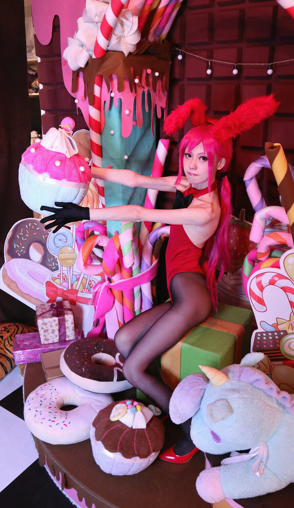

龍之谷蘿莉-兔女郎ver
這次也是出別人家的女兒(龍之谷-蘿莉) 小粉紅的另一套時裝-兔女郎裝la
距離上次出小粉紅也一兩年了 覺得自己不愧是面攤大王 可愛型角色好難駕馭
本家↓真的是這麼D可愛 已經預設女僕裝是正裝了(x

話不多說放正片 兔女郎版的小粉紅cos

因為時間很趕也很突發 所以拍的時間也很短
以下開始



依舊是感謝大家觀賞 面攤王ㄉ我 還是要努力想出好可愛角色ｒ（一笑起來就崩
- 拍攝時間：2019-08-04
- 攝影棚：台北 Miruna攝影棚
- 棚景名稱：歐棚
- CN：咩咩(小粉紅-機甲蘿莉)
- 攝影師：粉紅
- 攝影粉專：-